3D scanning on the cheap: turning a scratched, second-hand depth camera and a slow laptop into a 3D scanner that doesn’t lose the plot. A hobbyist’s field guide and a defensive publication.
Matthew Armstrong (The-Dorkknight)
Version 1.1, 13 November 2026 (first published as “Depth Perception”, 2 November 2026)
Defensive publicationCC BY-SA 4.0Scantastic 0.9.0 – 0.11.0Made-up test data, said so
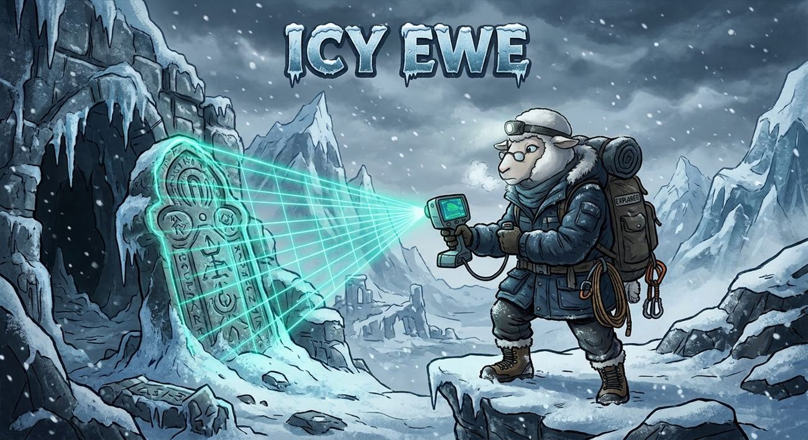
“Icy Ewe”, the cover art and the title of this paper: a sheep in a parka points a scanner at an icy rune stone. Say it out loud: icy ewe sounds like “I see you”, which is a depth camera’s whole job, and this one is doing it on the cheap, in the cold, with second-hand kit. (The ewe is wearing glasses because the camera’s window is scratched.)
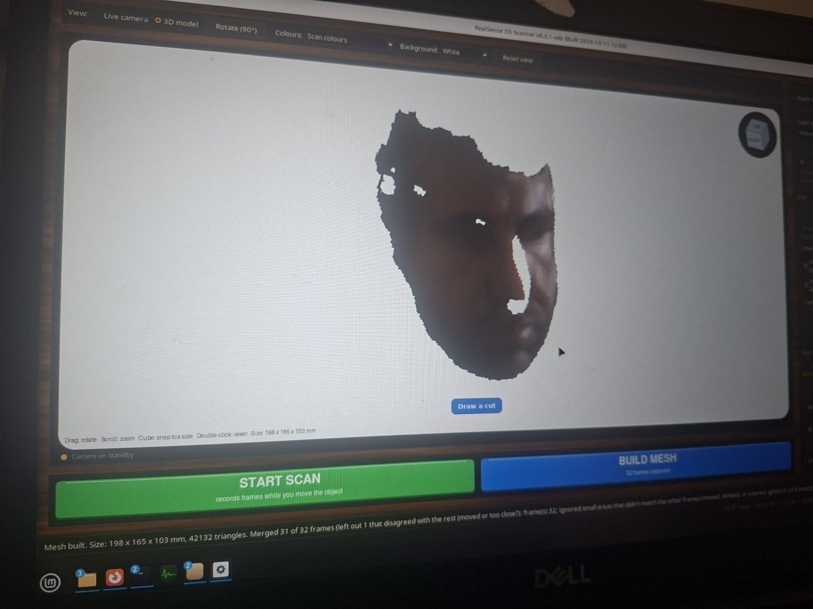
A real scan on real hardware. A face, scanned with the depth camera inside a Prowise MOVE 3in1 (an Intel RealSense D415) and Scantastic 0.5.1 on 11 October 2026: 31 of 32 frames merged. Its owner called it “a lot better, still gloopy”. Most of this paper is about what happened next.
The short version
The goal: a free desktop app that turns a cheap depth camera into a tabletop 3D scanner. The cameras are an Intel RealSense SR305 and the D415 inside a Prowise MOVE 3in1, both second-hand, one with a scratched window. The computer is anything down to a 7th-generation Core i3 with no graphics card. The app is called Scantastic.
The hard part isn’t the camera, it’s lining the frames up. A scan is dozens of snapshots taken from different places. Put one snapshot a few degrees out and the object grows a second nose. Over 90% of the time a build takes is spent lining frames up.
What this paper describes (in enough detail to rebuild it):
picture features (the patterns on the object and the room) used to check every step the 3D shape suggests;
a rule that only lets a loop closure move a frame as far as the chain could really have drifted;
a turntable mode that holds every frame to one fitted axis, with an optional printed marker ring;
live tracking that says “TRACKING LOST” before you waste a scan;
a “record now, stitch afterwards” style for slow PCs, where the slow part runs in its own process with a memory budget and simply tries again on fewer frames if it runs out;
speed profiles, alignments side by side in helper processes, and an exactly-the-same-answer shortcut for the final polish;
a sensor check that points the camera at a wall and maps where the window is scratched.
How well it works: on made-up scans with known answers, the version before this work failed every handheld and turntable scan. Now 0 of 40 turntable scans fail, and 1 of 20 held-out handheld scans does. No real camera has been through the new methods yet. Section 8 is a test plan.
Why a paper: it’s a defensive publication. Section 9 describes the methods and many variations of them and dedicates them to the public, so that they are prior art and nobody can easily patent them and charge hobbyists for them later.
1. Why this exists
Proper 3D scanners cost hundreds of pounds. Second-hand depth cameras turn up in odd places: the RealSense SR305 was sold for face login and gesture control, and a D415 sits inside a classroom document camera (the Prowise MOVE 3in1). They see depth, 30 times a second, for the price of a takeaway.
The catch is everything else:
The software that came with them was made for faces and gestures, not scanning. Intel’s own SDK is a toolbox, not a scanner.
The cameras are noisy. One of them has a scratched window that makes part of the view flicker.
The computer it has to run on is a 7th-gen i3 laptop: 2 cores, 4 threads, 8 GB, no graphics card worth the name.
The existing free scanning software that does this well (SLAM systems such as ORB-SLAM3) is under the GPL. Scantastic is under a noncommercial licence (free to use, not to sell), and the two licences can’t be mixed (section 3).
I’m working on about 50 programming projects at the same time, so I don’t have the time or the brain capacity for humour. Each joke cuts into my four hours of sleep-eating time (efficiency). This paper will therefore keep the jokes to a minimum and the pictures to a maximum.
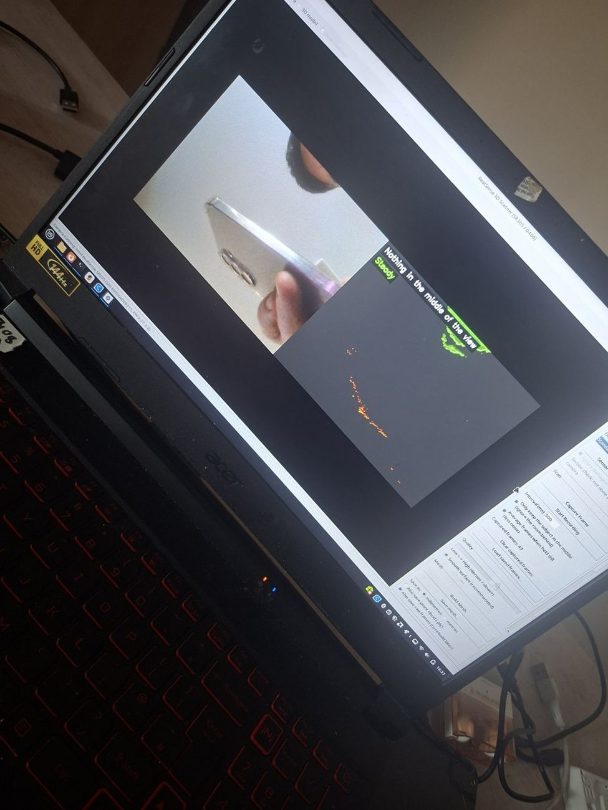
The first live picture, 1 October 2026: the colour view and, beside it, the depth the camera sees, with a “nothing in the middle of the view” warning. Everything after this started here.
2. How a depth-camera scanner works, in two minutes
A depth camera gives you a picture where each pixel says how far away that bit of the world is, as well as what colour it is. One such picture is a frame: a patch of 3D surface seen from one side.
To scan a whole object you take frames from all round it (moving the camera, or turning the object), then:
Clean each frame. Throw away the unreliable pixels: the “flying pixels” along outlines, readings too near or too far, and the room behind the object.
Line the frames up. Work out where the camera was for each frame, so all the patches land in the same place. This is the hard part.
Fuse them. Every frame “votes” on where the surface is. The noise averages out and one smooth surface is left.
Save a mesh (STL, OBJ or PLY) for a slicer, Blender or FreeCAD.
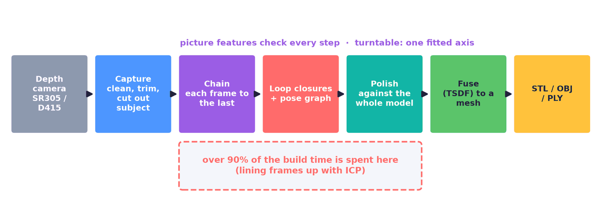
The whole pipeline. The lining-up stages (purple, red, teal) are where almost all of the time goes, and where almost all of the clever bits in this paper live.
Lining up, in one paragraph. The standard tool is ICP (Iterative Closest Point): slide one frame over another until each point sits as close as possible to the other frame’s surface. It’s excellent when the frames start close together, and it’s fooled by smooth or symmetric shapes. A ball fits a ball in any orientation. A plain box fits itself four ways round. You chain frame 1 to 2, 2 to 3 and so on, then add loop closures (frame 20 also overlaps frame 1: tie them together) and let a pose graph spread out the leftover error. Each wrong link in that chain is a doubled surface in the final model.
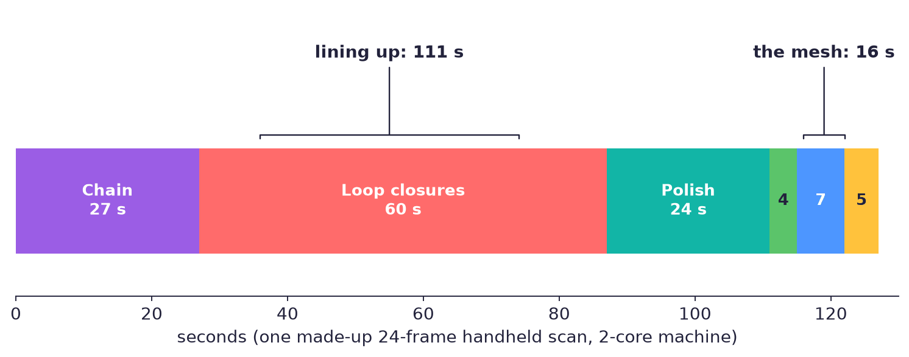
Where the time goes, measured on one made-up 24-frame handheld scan (Scantastic 0.11.0, a 2-core computer). Lining up is 111 seconds; making the mesh is 16.
3. What already exists
This is a well-studied problem. What follows is a hobbyist’s search, not a professional one, and not legal advice.
What
What it does
Why Scantastic didn’t just use it
KinectFusion (Newcombe et al., 2011) [1]
Live tracking against a fused volume, on a graphics card
Needs a GPU; the volume is the depth fusion Scantastic uses after lining up
Accept a loop closure only if image features and shape agree
Same family of idea as section 4.5; the details differ
Commercial turntable scanners and photogrammetry rigs
Turntables, often with printed marker mats, to know each turn
Closed software; the marker idea itself is old and well known
Patents found with titles close to this work
e.g. scanning an object turned in the hand (US 9,639,943 B1) [7]; power-efficient depth sensing for live reconstruction (US 9,443,350 B2) [8]; turntable scanner calibration (US 2003/0202691) [9]
Not assessed. Listed so readers can look. Nothing here is a claim about what they cover
The gap Scantastic fills is not a new algorithm. It’s a set of plain, checkable rules that make standard tools (ICP, ORB features, pose graphs, TSDF fusion) behave on bad cameras and slow computers, in a program anyone can run by double-clicking. Section 9 writes those rules down as prior art.
4. The method, in enough detail to rebuild it
All numbers are Scantastic’s defaults (0.9.0 to 0.11.0). Distances are in metres at the camera unless they say otherwise.
4.1 Capturing a clean frame
Depth confidence can be set stricter for a worn or scratched window (“Strict (worn / scratched glass)”).
Edge trim. Pixels next to a sudden depth jump are dropped: 2 pixels on the SR305, 5 on the D400s, whose outlines are softer.
Cut out the subject (on by default). Keep the surface nearest the camera in the middle of the view, plus everything joined to it without a depth jump, within a slab of depth. The room goes. Why: without this, a still room dominates the alignment. Turn yourself in front of a fixed camera and the room “doesn’t move”, so the frames get lined up to the room and the face comes out doubled. (This is the “second nose” in section 6.)
Average when still. If the camera has hardly moved (under 1 pixel of shift and 1.5 mm of depth change), up to 5 frames are averaged into one capture, pixel by pixel. A pixel from an earlier frame is only used where it agrees.
Speed hints on the live picture: “Steady”, “Moving quickly” (over 150 pixels a second at 640 wide) and “Too fast - slow down” (over 350). Coded-light cameras smear when you rush them.
Distance colours. The live depth picture is green in the best band (30 to 50 cm for the SR305, 35 to 65 cm for the D400s) and fades to red outside it.
4.2 Picture features: a second opinion on every step
The 3D shape can’t tell a ball from a rotated ball, but the pattern on it can. So every frame also gets:
up to 1,500 ORB keypoints (corners in the picture), found on a contrast-boosted greyscale copy (CLAHE);
keypoints kept only where there’s depth (in turntable mode, also at least 6 pixels inside the depth outline: outline points sit half on the still background and say “nothing moved”);
each keypoint lifted into 3D with its depth.
For two frames, keypoints are matched with Lowe’s ratio test at 0.9 (0.8 kept too few right matches on plain objects), then a RANSAC rigid fit: the 3D motion that the most matches agree with, to within 6 mm. That gives a camera move with a confidence that rises from 0 at 12 agreeing matches to 1.0 at 52.
That estimate is the second opinion. It’s used three ways:
As one more starting guess for ICP.
As a veto: if the pictures are confident (0.5 or more) and ICP’s answer is more than 2.5° or 12 mm away from theirs, ICP is wrong (a smooth surface fitting itself in the wrong place), and the frame is placed where the pictures say, then fine-tuned from there.
As a vote in loop closures (section 4.5).
4.3 Chaining frames, with guards
Each new frame is aligned to the last frame that worked:
Starting guesses: the tracker’s or pictures’ guess (if any), “the same move as last time”, and “no move”. ICP (colour ICP, matching within 8.7 mm at the default quality) runs from each; the one with the best two-way overlap wins. Two-way means checking that frame A’s points find frame B’s surface and B’s find A’s: a frame full of noise, or of the whole room, finds something near almost every point one way, but not the other way round.
If that’s weak (under 60% overlap), the slower feature-based global alignment (FPFH + RANSAC) is tried too.
If it’s suspicious (overlap under 60%, or the surfaces sit more than 1.6 times further apart than usual) and the pictures don’t vouch for the step, the frame is also tried against 6 earlier frames spread across the scan. The closest fit wins. This is how a quick swing back to the start re-attaches there.
If nothing fits but the pictures are sure, the picture estimate is used and fine-tuned.
A frame that fits nothing (under 35% overlap) is skipped, not glued on somewhere wrong.
4.4 The room check, for plain objects
A plain white box or mug gives the pictures almost nothing to match. But the room behind it doesn’t move. So in handheld mode, each frame also keeps a thinned (6 mm) copy of the whole view, before the subject was cut out. When the pictures can’t vouch for a step:
the two whole-room views are aligned coarse to fine (30, 15, then 8 mm), from each starting guess;
a fit counts only with at least 60% overlap and under 4 mm average error;
tables and walls are flat and slide over each other, so among the fits that pass, the one most picture matches agree with wins;
if the room says the object’s own fit is more than 2.5° or 12 mm out, and at least as many picture matches side with the room, the room wins.
The same pictures catch a classic mistake. If they say the camera hardly moved for most steps (under 1° and 3 mm) while the shape says it did, the object was turned by hand in front of a still camera. The pictures are right about the room and wrong about the object. They’re not allowed to overrule, and the report suggests Turntable mode.
4.5 Loop closures on a leash
Loop closures are where the 0.9.0 work found its worst errors. On a plain made-up blob, 40 of 42 accepted closures were wrong, by tens of degrees: a smooth surface happily fitting itself in the wrong place, with plenty of overlap.
The candidates are: frames 2 to 4 steps apart, every frame against the first, and up to 4 earlier frames seen from within 30° and 20 cm (a “revisit”). Each is aligned (coarse plain ICP at 4 times the match distance, then colour ICP), and kept only with at least 50% two-way overlap and a surface error under 1.6 times the scan’s typical step. Then:
Confirmed by the pictures? At least 12 picture matches agree with the closure and the pictures don’t back their own best estimate clearly better than this closure (0.10.0: a dozen chance matches had “confirmed” closures 18-24° out). Then it’s in.
Not confirmed? It may only move a frame as far as the chain could have drifted:
at most 2° + 0.25° for every step in between that the pictures vouched for + 5° for every step they couldn’t;
at most 8 mm + 2 mm per vouched step + 30 mm per unvouched step.
Either way, if the two frames’ own picture features disagree with the closure by more than 2.5° or 12 mm, and either the tracker’s or the pictures’ estimate for that pair was confident, or the pictures clearly prefer their own answer, it’s out.
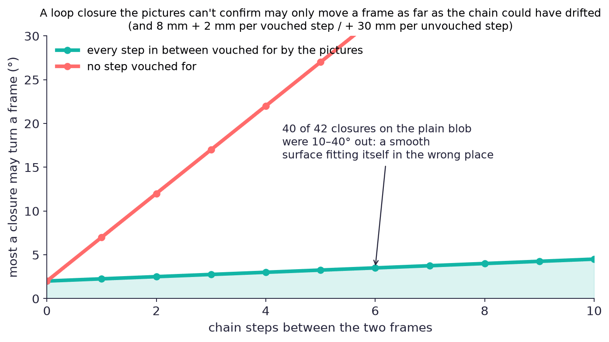
The loop-closure rule. Steps the pictures vouched for drift only a fraction of a degree each, so a closure that wants to move a frame by much more than that is a false fit.
4.6 Polish, and leaving out what moved
Pose graph (Open3D’s Levenberg-Marquardt optimiser) spreads the leftover error over the chain.
Polish (handheld): every frame is aligned again against the model made from all frames together, in two passes.
Frames that disagree with their neighbours (median point-to-plane offset over 2 times the scan’s typical offset, and more than 0.8 mm) are left out, never more than 40% of them.
Areas that moved (a blink, a mouth, a hand passing through, or a sensor defect that puts a bump at a fixed place in the image) are cut out of just that frame: a patch at least 25 points big, over 3 times the typical offset and 3 mm away, but under 35% of the frame. The other frames still cover it.
4.7 Turntable mode: one axis to rule them all
With the camera on a stand and the object on a turntable, every step is a turn about the same line. Scantastic uses that hard:
Remove what stands still. Either record the empty turntable first (any pixel within 8 mm of the empty scene is background), or find the table plane and, on top of it, the turntable’s top: a flat layer parallel to the table and wider than the object. Left in, the turntable top looks identical at every turn and pulls every step short.
Picture features on the object only. Keypoints near the object’s outline are dropped in turntable mode (they sit on the still background and said “nothing moved”).
Fit the axis to the steps. Each step’s rotation axis is fitted to one line. A step that doesn’t fit is tried again at the angle the pictures or neighbouring steps suggest. Each frame’s pose is then just its angle: the sum of the turns before it. One bad step can’t bend the rest of the scan.
Fine-tune axis and turns together. Each small step measures its turn well but its axis badly (a 12° turn about a line 5 mm away looks almost the same), and on a made-up scan that grew to about 6 mm on the far side of the object. So the axis (4 numbers) and every frame’s turn are fitted together by Gauss-Newton on point-to-plane distances, using each frame and its 4 nearest frames within 45°, with each turn held near what its step measured.
Close the full turn. When the scan goes all the way round, the last frames are also matched to the first and the angles are solved again with those closures in, so a little error per step can’t add up to a gap.
If the steps don’t fit one axis (more than 3 mm from it), the scan is treated like a handheld one instead.
No free polish. The handheld polish lets each frame move freely in any direction. On turntable scans of plain objects that undid the axis fit (0.6 mm became 3.5 mm), so turntable scans skip it.
Optional marker ring. A printed ring of ArUco markers lies on the turntable around the object. The object turns with the ring, so the ring’s pose in each frame gives the turn directly.
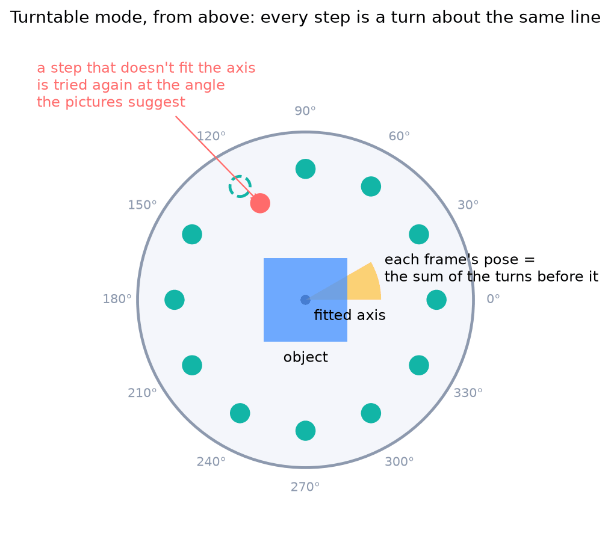
Turntable mode from above. Each frame sits on the fitted axis at the sum of the turns before it; a step that doesn’t fit is re-tried.
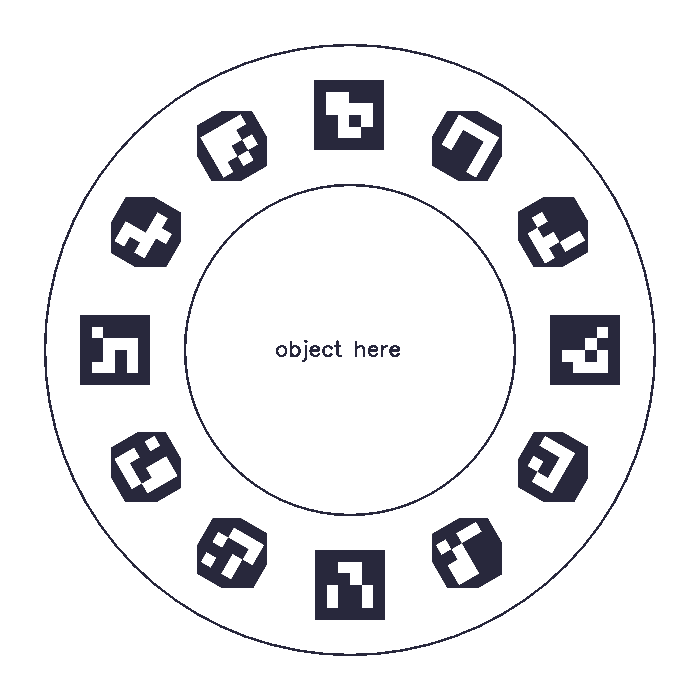
A marker ring of the kind Scantastic prints (an illustration drawn for this paper with OpenCV’s ArUco markers; the app’s own ring has its own layout and a 50 mm check bar).
4.8 Live tracking: knowing you’re lost while you can still do something about it
Version 0.10.0 added the parts of SLAM that help here (keyframes, and finding the way back when lost), written from scratch on OpenCV’s ORB features, so the licence stays the same:
Keyframes. Each live picture is matched to the current keyframe, not the frame before, so small errors don’t pile up. A new keyframe is taken after 8°, 4 cm, or when fewer than 60 features still match. 40 recent keyframes are kept.
Finding the way back. When a picture can’t be matched (camera covered, swung away), the tracker tries recent keyframes, then a spread of older ones.
TRACKING LOST appears on the live picture while it’s lost.
Each capture starts where the tracker said the camera was. These guesses carry where they came from and which track (one START to STOP, or one recording) they belong to. Guesses from two different tracks are never compared: the object may have been turned over in between. Live guesses may overrule ICP at 2.5° / 12 mm; an older recording’s chained guesses drift more and keep a looser 6° / 4 cm.
The camera thread only copies and queues. Captures are worked out on their own thread, at most 2 waiting. If the PC falls behind, a capture is skipped with a message rather than freezing the live picture.
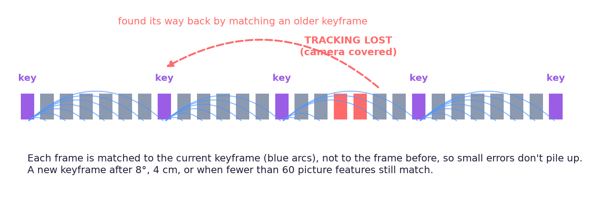
Keyframe tracking. Blue arcs: each frame is matched to its keyframe. Red: the camera was covered; the tracker found its way back by matching an older keyframe.
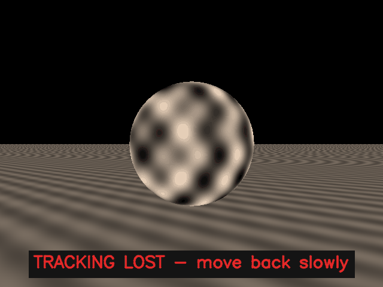
The real banner, drawn by the app’s own function over a made-up frame.
4.9 Slow PCs: slow, but never falling over
On a slow PC such as a 7th-gen i3, stitching while you scan should starve the camera: frames drop and the picture freezes. (Expected from timings on a 2-core test computer; not yet tried on a real i3.) So there are two scan styles:
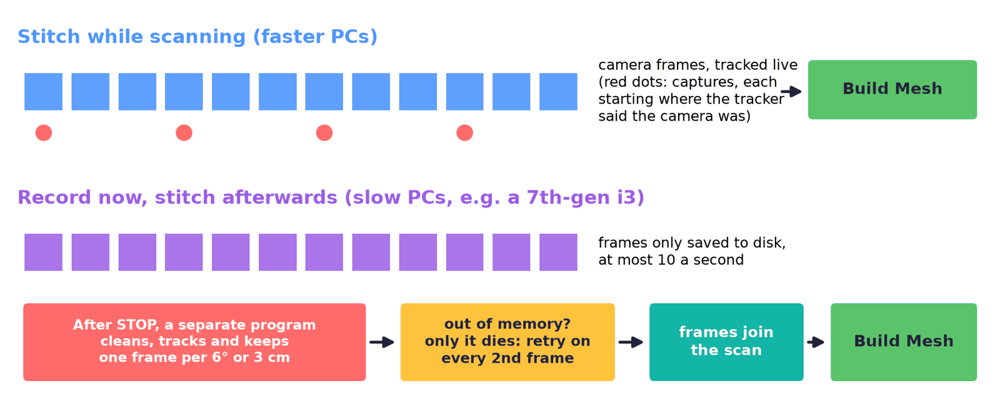
Two scan styles. On a slow PC, scanning only records; the heavy work runs afterwards in its own process.
The speed check. The first time it starts, the app times one tracking step on a made-up 640 × 480 picture. With 4 processor threads or fewer, or a step slower than 150 ms, it picks “Record now, stitch afterwards”. You can change it.
Recording saves the camera’s frames to disk at most 10 a second, using the same cleaned depth a live capture would get. The frame list (frames.json) is rewritten every 10 frames (every 50 on long recordings), to a temporary file that then replaces the old one, so a crash leaves a usable recording minus its last few frames.
Stitching runs in a separate process after STOP. It cleans the frames, follows the camera through all of them with the live tracker, and keeps one frame per 6° or 3 cm of movement. On a made-up 116-frame recording, aligning every frame took 14 minutes on the 2-core test computer; the 48 frames worth keeping took 4.
Memory budget: at most 30% of free memory at 5 MB a frame, never fewer than 40 or more than 300 frames. A longer recording is thinned to every n-th frame to fit.
If it dies, only the stitching process dies. It’s started again on every 2nd frame, twice at most. A process that dies before doing any work isn’t blamed on memory. The recording stays on disk whatever happens. Build Mesh turns into Cancel while it runs, and the status bar shows the minutes left.
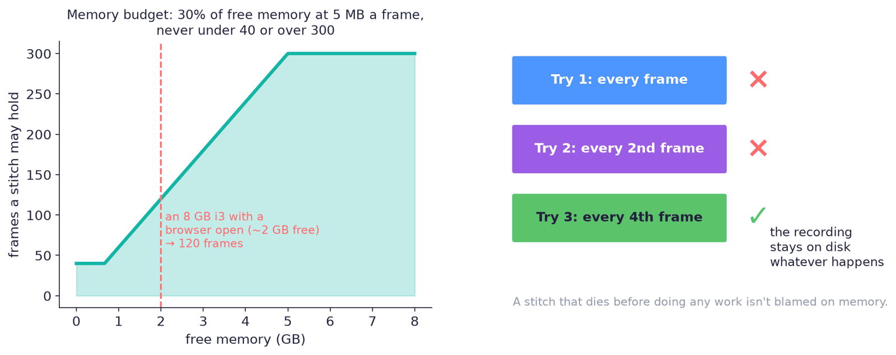
Crash-proof stitching. Left: how many frames a stitch may hold. Right: what happens if it still runs out.
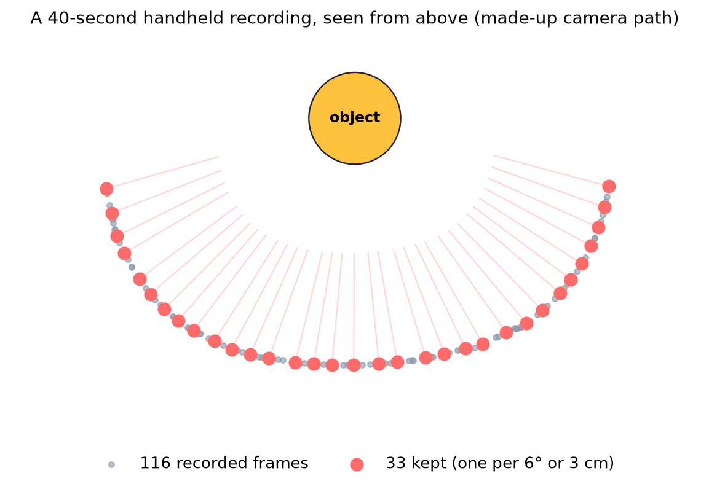
Thinning a recording by motion. Frames that mostly repeat each other are skipped before the slow part.
4.10 Speed profiles, side-by-side alignment and the graphics card
Version 0.11.0 brought over the speed profiles from my STL-to-STEP converter, then measured what actually helps here.
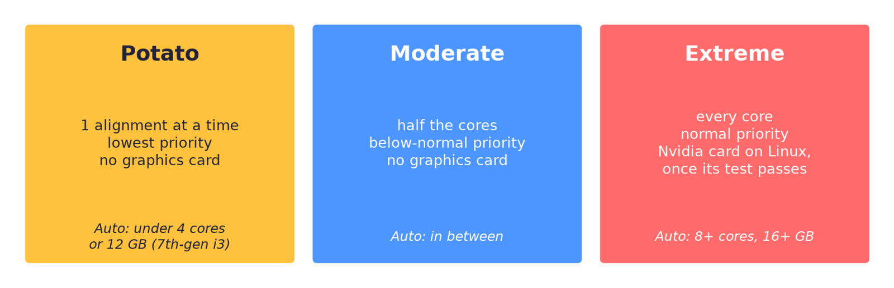
Speed profiles. Auto picks one from the computer’s cores and memory.
Priority. Building and stitching run at low priority on Potato (“nice 10” on Linux and macOS, “idle” on Windows), so the computer should stay usable. It makes nothing faster; it stops the build hogging the computer.
Alignments side by side (Moderate, and Extreme when no graphics card is in use: with a card, alignments queue on it one at a time). The loop-closure alignments are independent of each other, and so are the starting guesses of one chain step. Helper processes, each holding its own copy of the frames, run them while the main build process works through them too. Answers are put back in the original order and the checks then run in that order, so the result is the same (largest pose difference measured: 3 × 10−13, which is Open3D’s own last-digit noise).
A helper ends when its pipe breaks or a watchdog sees the builder gone (Cancel).
A helper that dies or fails a task only costs time: the builder does that task itself.
The number of helpers is cut to fit in half the free memory (300 MB plus 1.5 times the frames each).
Each process gets two Open3D threads per core’s share.
Exactly-the-same polish, quicker. Colour ICP works out a colour gradient for every point of the target, from its neighbours within 2 times the match distance, on every call. In the polish the target is the whole model, and each frame only sees part of it. So only the model within 5 times the match distance of the frame is used. Points further than 3 times can’t change the answer. If the frame moved more than the spare 2 times, or the answer scores differently against the whole model, it’s redone on the whole model. Poses matched the uncropped run to 10−14; the polish took 18 seconds instead of 24 on one made-up scan.
What the three margins are for: matches are only made within 1× of a point; each point’s colour gradient looks 2× further; so nothing beyond 3× can change the answer. 5× leaves 2× to spare for the frame moving.
Repeatable fallback. The feature-based fallback alignment uses random sampling. It’s now seeded, so the same frames always give the same answer.
The graphics card, with a gate. Open3D’s newer “tensor” ICP and depth fusion can run on an Nvidia card (CUDA). The standard Open3D for Linux already contains that part. Before a card is used, a separate process runs the actual steps (colour ICP between two small made-up surfaces, and a depth fusion) on the card and on the processor, and they must agree to 0.5 mm. During a build, any card error (out of memory, a driver fault) switches the card off and the processor redoes that step; an error is never mistaken for “these frames don’t overlap”.
Not used: Nvidia on Windows (Open3D’s Windows CUDA build is a preview), Apple graphics (Open3D has no Metal support), AMD and Intel graphics.
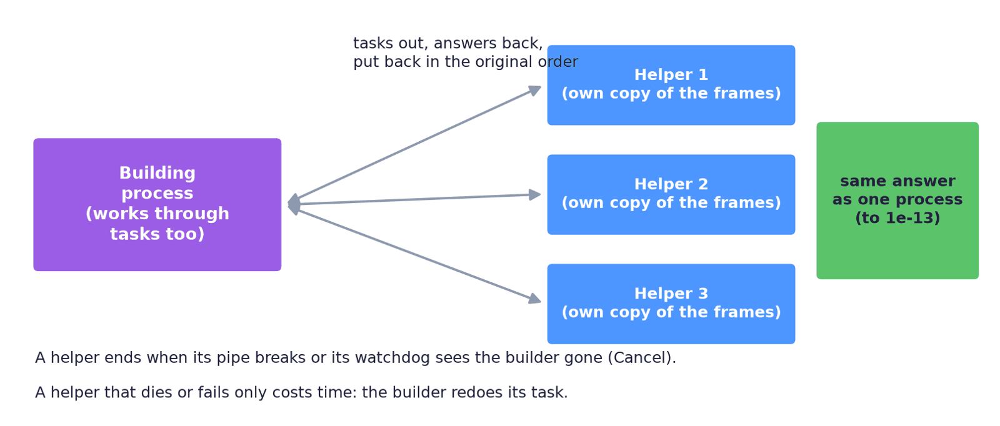
Side by side. The answers come back in the original order, so the result is the same as one process.
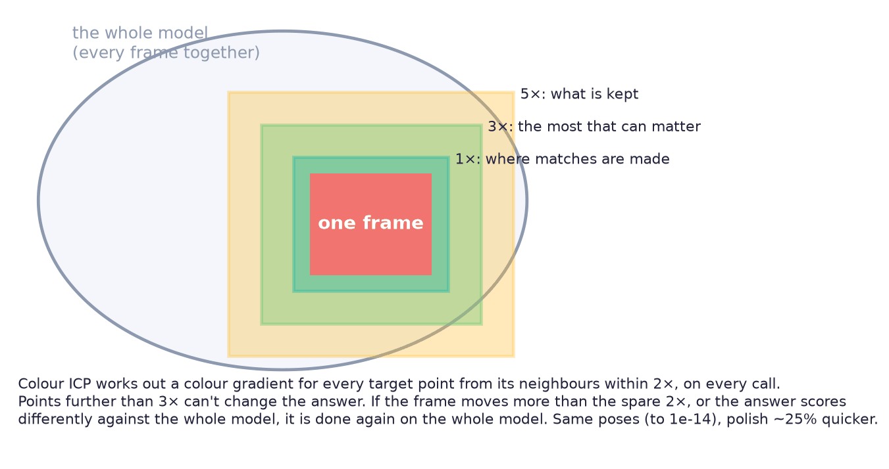
The exactly-the-same crop. Only the part of the model that can change the answer is used.
4.11 The sensor check: mapping a scratched window
Point the camera at a plain flat wall, hold still, and the app collects 30 frames. A flat wall seen by a pinhole camera has 1/depth changing in a straight line across the picture, so a smooth low-order fit of 1/depth is the “true” wall. That fit also absorbs lens distortion and a slightly bowed wall. (The fit is repeated with the worst pixels left out; the written breakdown in the report uses an even more outlier-proof fit from 2,000 random trials.) A scratch then stands out from it in one of three ways. These are the limits for pixels that get ignored while scanning:
Fault
Ignored when (scaled to 40 cm)
Shown as
Flicker
a pixel’s noise is over 2.5 times the typical noise, and over 1.5 mm
red on the noise map
Steady offset
a pixel is off the wall by over 5 times the typical spread, and over 2 mm
red (too far) or blue (too near) on the offset map
No depth
enclosed holes up to 5% of the view, and pixels that lose their depth more than a quarter of the time
purple
The report’s written diagnosis is more sensitive: it already counts an offset of 3 times the typical spread.
The marked pixels can then be ignored while scanning, all of them or only the no-depth ones, and shown live in magenta.
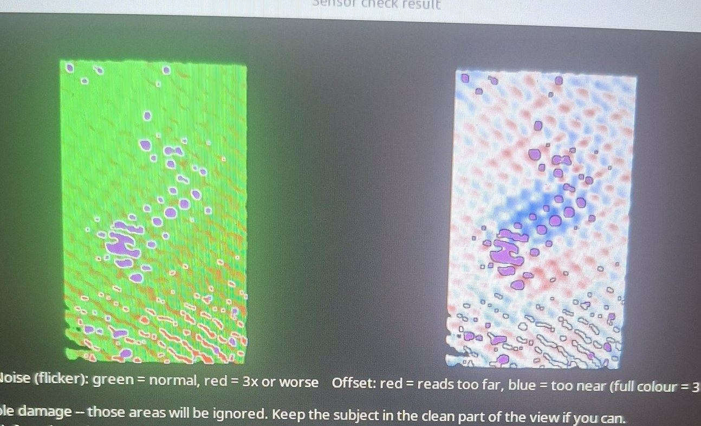
A real sensor check, on the D415 at 50 cm (11 October 2026): “noticeable damage”, 8.1% of the view to ignore. Left, flicker; right, steady offset.
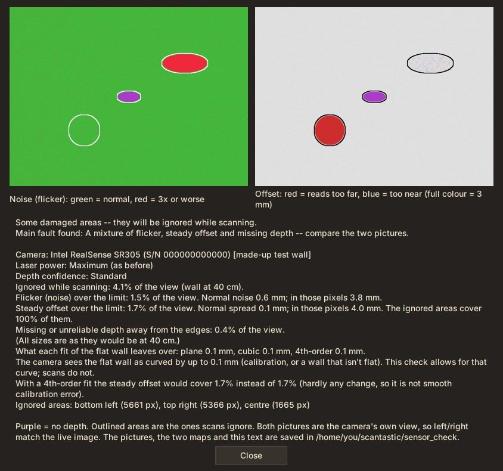
The same check on a made-up wall with one scratch (flicker), one dent (steady offset) and one hole, as drawn by the app.
4.12 From frames to a mesh
Smooth surface (default): TSDF fusion in an Open3D VoxelBlockGrid, sized from the scan itself because it reserves its memory up front. On the SR305 the grid follows the Quality slider (2.5 mm at Low, about 1.5 mm in the middle, 1 mm at High) and is smoothed with 5 Taubin passes; the D400s start at a fixed 1 mm grid and 2 passes. Surface seen in only one frame is dropped when there are enough frames.
Watertight: Poisson reconstruction, trimmed back to within 2.5 grid cells of a scanned point.
The 3D preview is coloured by how many frames saw each area, so thin spots show before you print.
Cut and make solid: draw a line across the model to cut it, or let the app find the table. “Make solid” closes an open scan by inside-outside voting along 9 directions.
5. A tour of the app
These screenshots come from the app itself, running on made-up data, because the camera wasn’t at the computer the paper was written on. They show version 0.10.0’s window; 0.11.0 adds the Speed and graphics card box.
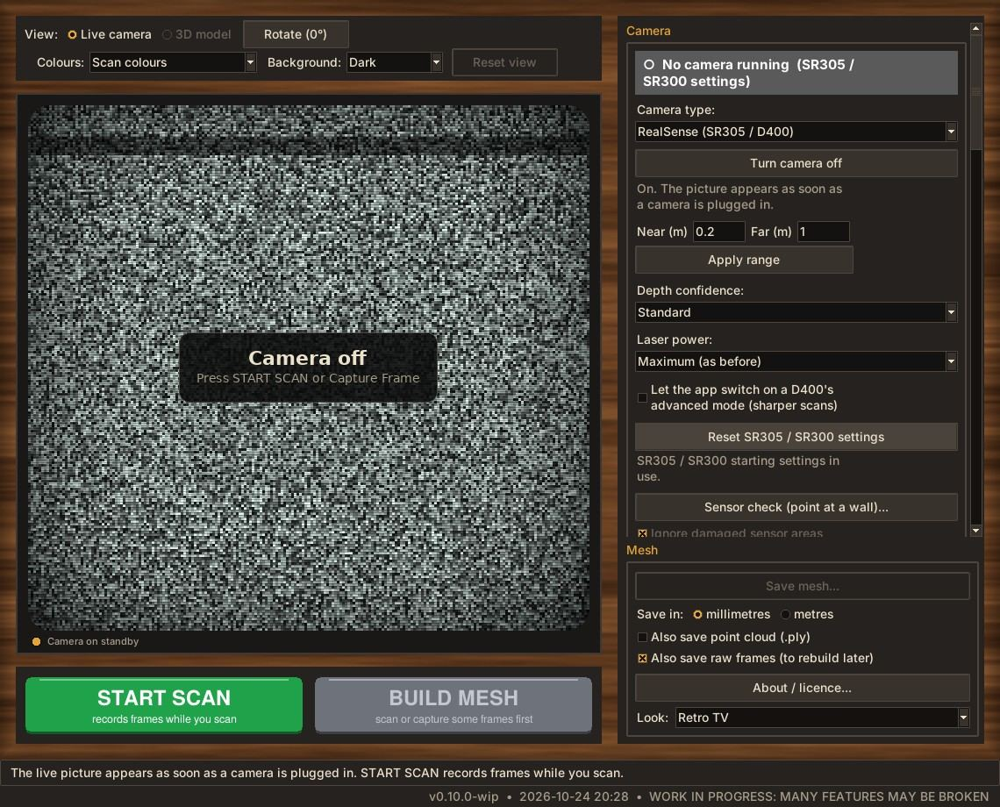
The main window in its default “retro TV” look: live picture on the left (static when no camera is plugged in), settings on the right, and two big buttons.
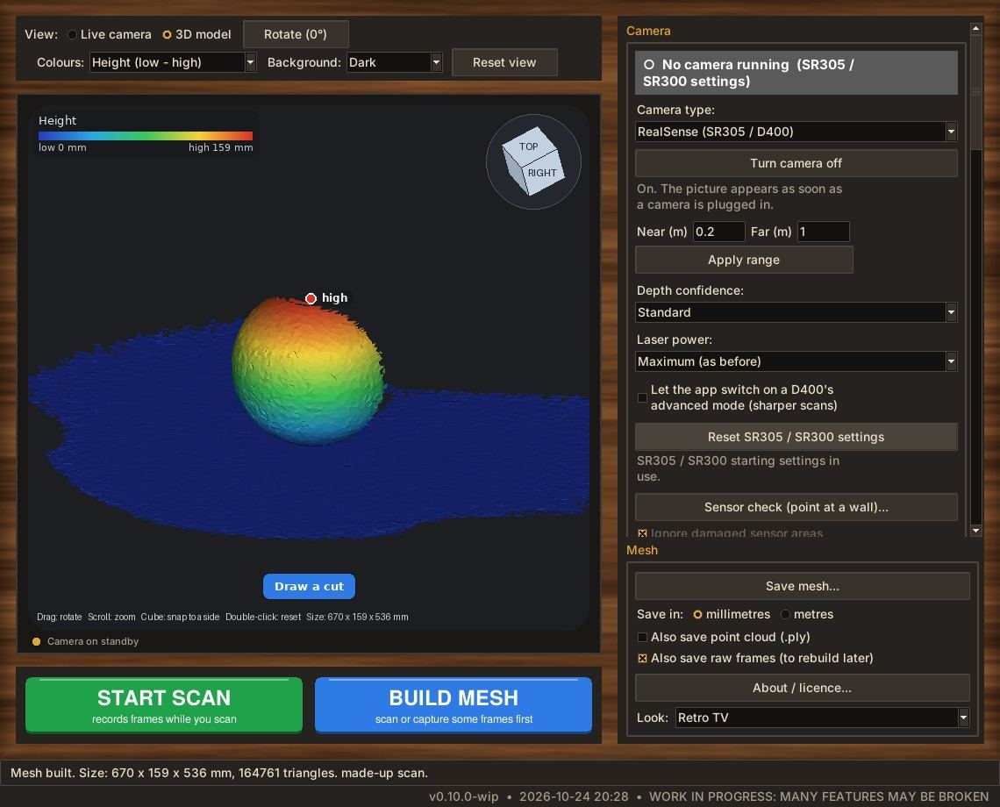
A made-up scan, coloured by height, with the view cube top right.
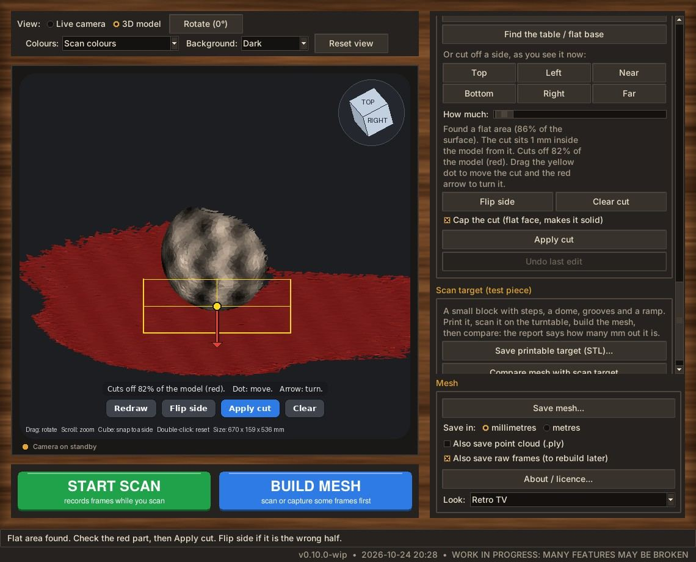
Cutting: “Find the table” found the flat base; the part that will go is red, and the yellow handle drags the cut.
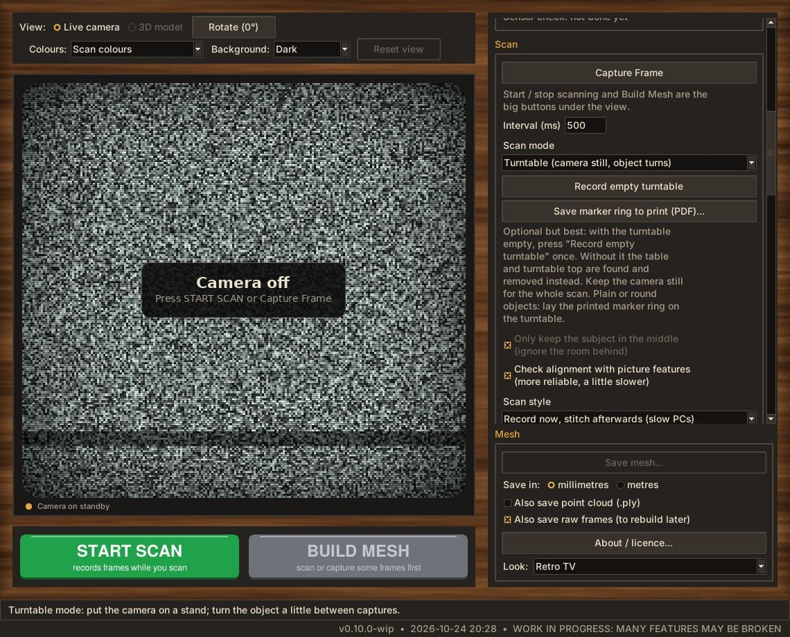
Turntable mode in the Scan panel: record the empty turntable, save the marker ring, and the scan-style box.
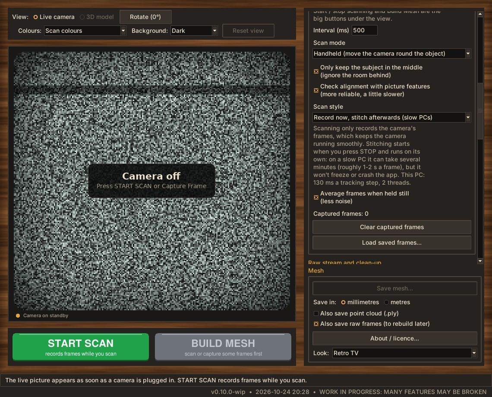
“Record now, stitch afterwards”, chosen for a slow PC, with the honest expectations spelled out in the panel.
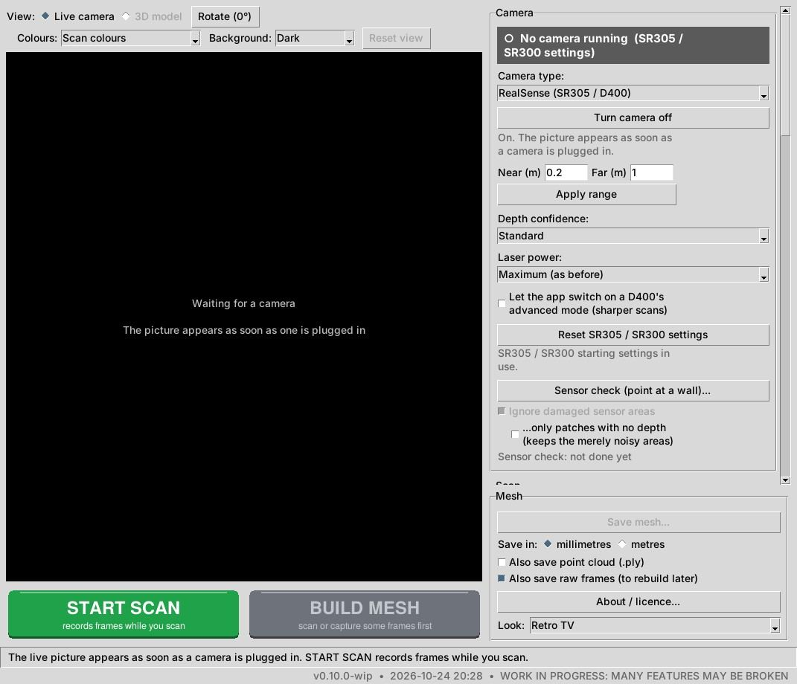
The plain look, for anyone who doesn’t want a wooden television.
6. The mistakes, for free
Every one of these happened. Most were caught by measuring, a few by a separate reviewer, and some by the owner of the camera.
What went wrong
What it looked like
The fix
The room was in every frame
A still room “won” the alignment, so turning in front of the camera gave a second nose
Cut out the subject (4.1)
A setting from an older Open3D
The fallback alignment’s RANSAC got a “confidence” of 500, so it never stopped early: 400,000 iterations, every time
Proper (iterations, confidence) values
Open3D 0.20’s one-line hole filling
Handed back vertices from memory that had already been freed: garbage in 19 of 30 tries
Keep every step alive and copy the arrays out: 0 of 30
An outline trim made for the D415
Silently cut 20% of the points from every SR305 frame
Trim per camera (2 px SR305, 5 px D400)
Loop closures on smooth shapes
40 of 42 accepted closures on the plain blob were tens of degrees out
The drift rule (4.5)
Picture keypoints on the outline (turntable)
Background corners said “nothing moved”, so every turn came out short
Drop outline keypoints, turntable only (it broke handheld scans when done there too)
The turntable’s own top
Looks the same at every turn: pulled every step short
Find it and remove it (4.7)
The axis from small steps
About 7 mm out, 6 mm of error on the far side
Fit axis and turns together (4.7)
The free polish on turntable scans
0.6 mm became 3.5 mm on the plain scan target
Turntable scans skip it
A dozen chance picture matches
“Confirmed” loop closures 18-24° out
Confirmed only if the pictures don’t prefer their own answer (4.5)
The older recording tracker
One bad link put every later frame 0.7 m out, while reporting 0.65 confidence
Stitching uses the keyframe tracker
Aligning every recorded frame
14 minutes for one 116-frame recording
Keep one frame per 6° or 3 cm: 4 minutes
Open3D 0.20 on Apple-silicon Macs
Needed Homebrew’s libusb: “Library not loaded”
Macs use Open3D 0.19 (figure below)
A graphics-card error
Treated as “no overlap”, so frames could be dropped silently
Switch the card off, redo on the processor
Helpers after Cancel
A busy helper kept running
A watchdog ends it within a second
A result file for 0.10.0
Said 0 of 20 failed. Run again, the shipped code fails 1 of 20
Corrected in 0.11.0’s notes; the rerun is published next to it
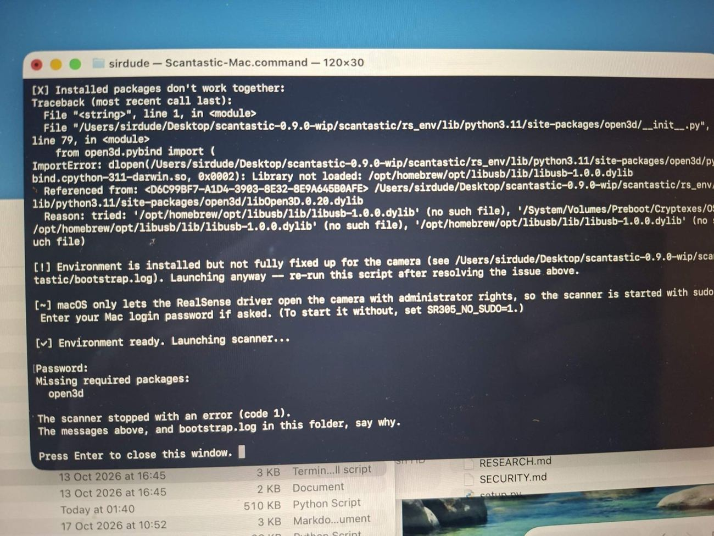
Mistake, live: the first real run on an M5 Mac (24 October 2026). Open3D 0.20 couldn’t find a library that only Homebrew installs. Fixed the same day.
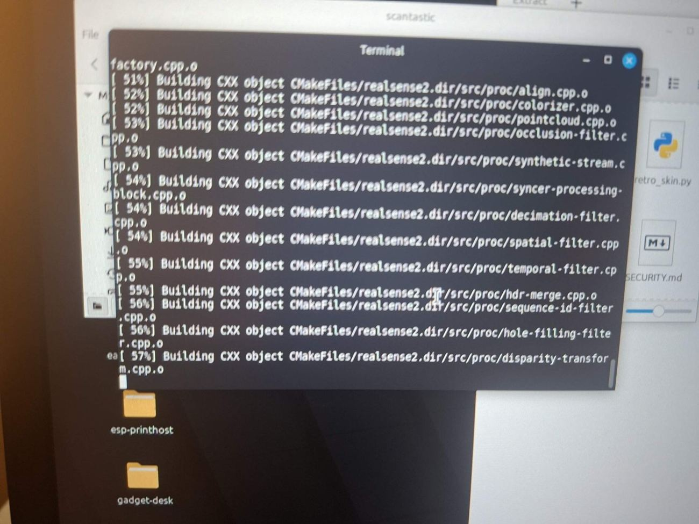
Building the camera driver from source on Linux (15 October 2026), before 0.8.0 switched to Intel’s ready-made one. It took a while.
7. The numbers
Everything in this section comes from made-up scans with known answers (a benchmark that renders 5 objects with rich and plain patterns, with an SR305-like noise model, from known camera paths). A scan fails if any kept frame lands more than 3 mm from where it should. Tuning used seeds 0-1; the held-out seeds 1000-1001 were only used to check finished code. Times are on a 2-core cloud computer.
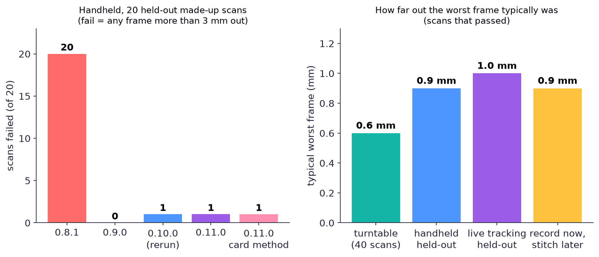
Results. Left: handheld held-out scans that failed, by version. Right: how far out the worst frame typically was, on scans that passed.
Version, mode
Failed
Typical worst frame
0.8.1 (before this work), handheld and turntable
every scan
—
0.9.0 turntable (tuning + held-out)
0 of 40
0.6 mm
0.9.0 handheld, held-out
0 of 20 (as recorded then; not re-run)
0.9 mm
0.10.0 live tracking (tuning + held-out)
0 of 20 each
1.0 mm
0.10.0 record now, stitch later, held-out
2 of 20 (one stray frame each, 6-8 mm)
0.9 mm
0.10.0 handheld held-out, re-run
1 of 20 (the plain blob, 3.1 mm)
0.93 mm
0.11.0 handheld held-out
1 of 20, the same scan, identical answers on all 20
0.93 mm
0.11.0, graphics-card code run on the processor
1 of 20 (the same scan)
0.88 mm
Speed, honestly. On a 7th-gen i3, expect several minutes from STOP to a mesh (estimated from the 2-core test computer, which is in the same range; not timed on a real i3). The 0.11.0 speed-ups are small on 2 cores: the polish about a quarter quicker, loop closures about 10% quicker with one helper. More cores and a graphics card should help more, but neither has been measured.
8. A test plan, for anyone with a depth camera
If you have an SR305, SR300, a D400-series camera or a Prowise MOVE 3in1, please try these and report back (an issue or discussion on the repository, with photos):
Sensor check on a plain wall at 40-50 cm. Post both maps and the percentage.
Scan target. Print the app’s 70 mm test block, scan it in Turntable mode, and use “Compare mesh with scan target”. It reports the error in millimetres.
Turntable, with and without the printed ring, on a plain object (a mug) and a patterned one.
Handheld, both scan styles, on the same object. Note the time from STOP to mesh and whether TRACKING LOST appeared.
A slow PC. On a 7th-gen i3 or similar: does “Record now, stitch afterwards” get picked, does it finish, and does the computer stay usable while it works?
A many-core PC or an Nvidia card on Linux: Potato against Extreme, same scan, time to mesh.
9. Defensive disclosure
This section is written to be read as prior art. It describes methods implemented in Scantastic (versions 0.9.0 to 0.11.0, source published at the repository below), and variations of them. All of them are dedicated to the public. Anyone may use them, free, for any purpose. The purpose of publishing them is to make it hard for anyone to patent them and restrict their use. Where a number is given, any other value that does the same job is also disclosed. Not legal advice.
D1. Choosing between live stitching and record-then-stitch by measuring the computer. On first start (or on demand) the software times a representative step of its own live processing (feature extraction and matching on a synthetic image; or any other step of the real pipeline) and reads the processor thread count (or, as a variation, memory too). Below a threshold it selects a mode where scanning only records frames (optionally pre-cleaned, rate-limited) and all alignment runs afterwards. The choice is shown to the user with an expected-time warning, and the user can override it. Variations: re-measuring periodically or while scanning; switching modes mid-scan when frames start to drop; thresholds on battery state, temperature or other load; recording at reduced resolution; recording only frames that pass a motion or sharpness test.
D2. Crash-tolerant deferred stitching. The deferred alignment runs in a separate operating-system process with a frame budget derived from free memory (a share of it divided by a per-frame cost, clamped to limits). If the process dies, it is restarted on a subsampled set of frames (every 2nd, then every 4th; or any decreasing subset), a bounded number of times. A process that dies before reporting any progress is treated as a different failure from running out of memory. The recording’s index is written atomically (to a temporary file, then renamed) at a decreasing frequency as the recording grows, so a crash loses only the last few frames. Variations: splitting the recording into overlapping chunks that are stitched and then joined; spilling to disk; any other subset rule (by motion, by time, by sharpness).
D3. Motion-based thinning before global alignment. A lightweight tracker follows the camera through every recorded frame; only frames that have turned or moved more than a threshold (6° or 3 cm; or any other threshold, including one adapted to the object size or the overlap) from the last kept frame are passed to the expensive alignment, together with their tracked poses as starting guesses. On a turntable, a fixed number of frames spread evenly over the turn.
D4. Track-scoped, source-weighted pose priors. Each starting guess carries its source (live tracker, recording tracker, picture features, marker ring) and a track identifier. Guesses from different tracks are never compared or chained. The tolerance with which a guess may overrule a shape-based alignment depends on its source (tight for a keyframe tracker, loose for a drifting frame-to-frame tracker). A guess with low confidence is replaced, for checking purposes, by an independent pairwise estimate from the two frames’ own picture features.
D5. Drift-bounded loop-closure acceptance. A loop closure between two frames is accepted without image-feature confirmation only if it moves the frame by no more than a bound that grows with the number of chain steps between the frames, with a small allowance per step that image features vouched for and a large allowance per step they couldn’t (2° + 0.25°/vouched + 5°/unvouched, and 8 mm + 2 mm/vouched + 30 mm/unvouched; or any monotonic function of those counts, step lengths or step confidences). Image-feature confirmation requires both a minimum number of agreeing matches and that the features do not clearly prefer their own best estimate; and any closure the two frames’ own features contradict is rejected. Variations: the same bound applied to chain steps or relocalisation; bounds expressed as covariance in the pose graph instead of accept/reject.
D6. The still room as a referee. In handheld scanning of an isolated object, a down-sampled copy of the whole scene (before the object is cut out) is kept per frame. Where image features can’t vouch for a step, the scene copies are aligned coarse to fine from several guesses. Among fits that pass overlap and error thresholds, the one most image-feature matches agree with is chosen, and it overrules the object’s own fit only if the features side with it at least as much. Also: when image features say the camera stood still while the object’s shape says it moved, the software concludes the object was moved in front of a still camera, stops the features from overruling, and suggests a turntable mode.
D7. Turntable poses as one axis plus angles. With a still camera, every pairwise step is treated as a rotation about one common axis. The axis is fitted to all steps, off-axis steps are re-tried at an angle from image features or neighbouring steps, and each frame’s pose is the cumulative angle. Axis (tilt and position) and all angles are then refined jointly by least squares over pairs of nearby frames (each frame’s nearest few within 45°; or any other choice of pairs), together with full-turn closures where the scan goes all the way round, with each angle held near its measured step. A free 6-degree-of-freedom refinement is skipped in this mode, and if the steps don’t fit one axis the scan falls back to free handheld-style alignment. Static scenery is removed by an empty-scene snapshot or by detecting the table plane and a turntable top (a flat layer parallel to and above the table, wider than the object). Image keypoints near the object outline are excluded in this mode only. Variations: a printed marker ring giving angles directly (ArUco, AprilTag, coded dots, a printed angle scale); a motorised turntable reporting angles; any mix of these as priors.
D8. Exact cropping of the target in colour ICP. When aligning a frame to a much larger target (a fused model, a previous scan), the target is cropped to the region within a margin of the frame’s starting position, where the margin is at least the colour-gradient neighbourhood radius plus the match distance plus an allowance for movement (5 times the match distance in the implementation). The result is accepted only if the frame moved less than the allowance and its fitness and error, re-scored against the whole target, are unchanged; otherwise the alignment is redone on the whole target. Variations: caching target gradients instead; tiling the target; any margin derived the same way for other neighbourhood-based ICP variants.
D9. Order-preserving parallel alignment with fail-safe helpers. Independent alignment tasks (loop-closure candidates, multiple starting guesses for one step) are run in helper processes holding copies of the frames, with the main process also working, and answers re-ordered to the original task order so the result equals a single-process run. Helpers are tied to the main process by a pipe and a watchdog; a task that fails in a helper is run only by the main process thereafter; the helper count is limited by free memory; random number generators used in alignment are seeded per call so results don’t depend on which process ran which task.
D10. A graphics-card gate made of the real work. Before an accelerator is used, a separate process runs the same alignment and fusion steps on it and on the processor with synthetic input, and the accelerator is enabled only if the answers agree within a tolerance. During use, any accelerator error disables it for the rest of the job and the affected step is redone on the processor; an accelerator error is never interpreted as a negative result (such as “no overlap”). The card list shown to the user gives, per card, whether it can be used and why not.
D11. A flat-wall sensor map for depth cameras. The camera is held still in front of a flat wall; a smooth low-order surface is fitted to 1/depth across the image, robustly; pixels are classified as flicker (temporal noise well above typical), steady offset (bias well above typical spread) or missing (enclosed holes), each with an absolute floor scaled to a reference distance. The classes are shown as separate maps and can be excluded from scanning, together or individually. Variations: other reference targets (a sphere, a printed pattern); repeating the check over time to track wear.
D12. Live-scanning feedback. A “tracking lost” banner on the live picture when a keyframe tracker can’t place the current frame; speed warnings from image motion and depth change; distance colouring towards a best working band; automatic averaging of frames when the camera is still; and captures queued off the camera’s thread, bounded, with a generation counter so cleared scans don’t receive stale captures.
D13. Per-frame removal of areas that moved. After alignment, a coherent patch of one frame (a minimum point count and maximum share of the frame) that sits much further from the other frames than the scan’s typical offset, while the rest of that frame agrees, is excluded from that frame only, and the corresponding pixels are excluded from fusion.
10. Limits, and what hasn’t been tested
None of the 0.9.0 to 0.11.0 methods has been run on a real camera yet. The real photos in this paper are from earlier versions.
All measured results are from made-up scans with a made-up noise model and texture.
Not run: a real 7th-gen i3, a computer with more than 2 cores, any graphics card, a real out-of-memory death of the stitching process, the Windows launcher, a printed marker ring, a printed scan target.
1 of 20 held-out handheld scans still fails (a plain blob), and record-now-stitch-later had 2 of 20 with a stray frame.
11. Credits and how this was made
Built on: Open3D (MIT) [10], OpenCV (Apache-2.0) [11], Intel’s librealsense (Apache-2.0), NumPy, Pillow and Python’s tkinter.
Written with help from Claude (Anthropic’s AI assistant), which wrote much of the code, ran the benchmarks and drafted this paper. The camera, the scratches, the bug reports from real hardware and the decisions are mine. Every number above came from code that was run, and the made-up ones say so.
Not affiliated with Intel, Prowise, or anyone else named here. RealSense is a trademark of Intel.
Everyone who sends a test result, a correction or prior art I missed will be credited in the next version.
References
R. A. Newcombe et al., “KinectFusion: Real-time dense surface mapping and tracking”, ISMAR 2011.
T. Whelan et al., “ElasticFusion: Dense SLAM without a pose graph”, RSS 2015; A. Dai et al., “BundleFusion”, ACM TOG 2017.
Q.-Y. Zhou, J. Park, V. Koltun, “Open3D: A modern library for 3D data processing”, 2018. https://www.open3d.org
E. Rublee et al., “ORB: an efficient alternative to SIFT or SURF”, ICCV 2011; S. Garrido-Jurado et al., “Automatic generation and detection of highly reliable fiducial markers under occlusion” (ArUco), Pattern Recognition 2014.
How to cite: Armstrong, M. (2026). Icy Ewe: 3D scanning on the cheap. A hobbyist’s field guide and a defensive publication. Version 1.1, 13 November 2026 (first published as “Depth Perception”, 2 November 2026). https://github.com/The-Dorkknight/icy-ewe